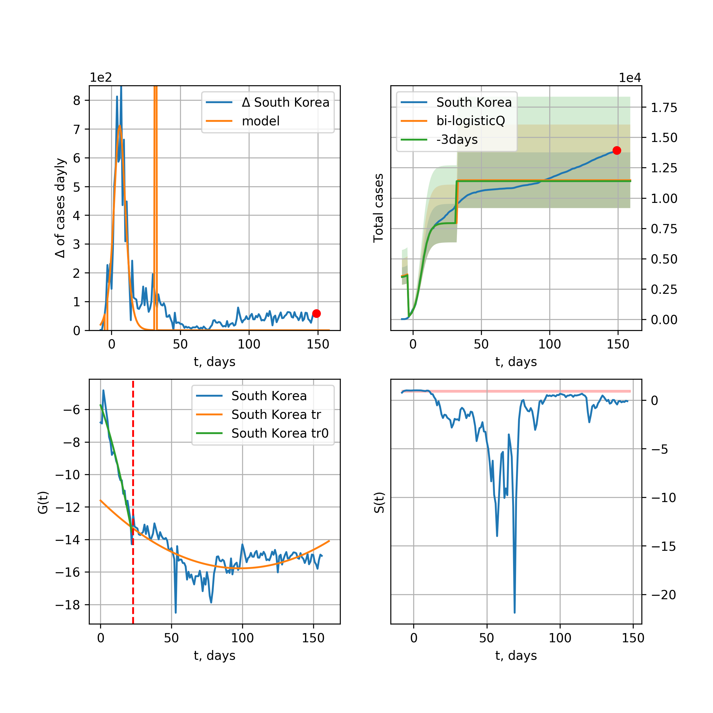

Multi-logistic model of COVID-19 dynamics
Model, code, results
Project maintained by algmaknick Hosted on GitHub Pages — Theme by mattgraham
World

World data at: 2020-05-10
+3 day model MAPE: 0.043072
model: bi-logisticQ
coeffs: [ 4.17275126e+06 1.11332750e-06 7.44555825e+01 -8.76789162e+04]
S.Korea scenario coeffs: [0.35416971, 0.02606324, 4.35859408, 19.30413219]
rational stdev: 0.183787
forecast at the end of period: +307 days
deltaDaycases: 1439
total cases: 5815039 ± 1068730
total death: 394796 ± 217675
tri-logisticQ approximation splitting points: 26,54
trend coefficient of determination: 0.957216
intercept_: -9.890425229004336
coeffs_: [ 0. -0.26614025 0.00124975]
trend1 coefficient of determination: 0.900515
intercept_: -20.622215746086294
coeffs_: [ 0. 0.23801537 -0.00236922]
trend coefficient of determination: 0.992906
intercept_: -2.57629205135294
coeffs_: [ 0. -0.2996187 0.00135873]
European Union

European Union data at: 2020-05-10
+3 day model MAPE: 0.014665
model: logisticQ
coeffs: [ 1.06723721e+06 8.75328586e-07 4.91830248e+01 -1.36486210e+05]
S.Korea scenario coeffs: [0.35416971, 0.02606324, 4.35859408, 19.30413219]
rational stdev: 0.428665
forecast at the end of period: +202 days
deltaDaycases: 307
total cases: 1440190 ± 617359
total death: 151460 ± 194776
trend coefficient of determination: 0.987850
intercept_: -3.00027060523178
coeffs_: [ 0. -0.32955283 0.00170564]
USA

USA data at: 2020-05-10
+3 day model MAPE: 0.015323
model: Richards
coeffs: [ 1.77757670e+06 3.92368187e+00 -4.57118884e+01 1.32404843e-02]
S.Korea scenario coeffs: [0.36242246, 2.56241634, 1.84890887, 0.13324732]
rational stdev: 0.271790
forecast at the end of period: +349 days
deltaDaycases: 912
total cases: 2368525 ± 643741
total death: 139909 ± 114077
trend coefficient of determination: 0.939530
intercept: -0.993775
slope: -0.047456
Spain

Spain data at: 2020-05-10
+3 day model MAPE: 0.012039
model: Richards
coeffs: [ 2.77226295e+05 6.32830155e+00 -3.92004472e+01 1.07094414e-02]
S.Korea scenario coeffs: [0.36242246, 2.56241634, 1.84890887, 0.13324732]
rational stdev: 0.238139
forecast at the end of period: +307 days
deltaDaycases: 53
total cases: 375378 ± 89392
total death: 37757 ± 26974
trend coefficient of determination: 0.942194
intercept: -0.785617
slope: -0.059621
Italy

Italy data at: 2020-05-10
+3 day model MAPE: 0.003090
model: Richards
coeffs: [ 2.33198704e+05 5.10618578e+00 -4.63617173e+01 1.20129703e-02]
S.Korea scenario coeffs: [0.36242246, 2.56241634, 1.84890887, 0.13324732]
rational stdev: 0.081523
forecast at the end of period: +279 days
deltaDaycases: 118
total cases: 311930 ± 25429
total death: 43513 ± 10641
trend coefficient of determination: 0.980718
intercept: -1.099566
slope: -0.057342
United Kingdom

United Kingdom data at: 2020-05-10
+3 day model MAPE: 0.018625
model: Richards
coeffs: [ 2.93785631e+05 4.42016138e+00 -5.53145247e+01 1.15313559e-02]
S.Korea scenario coeffs: [0.36242246, 2.56241634, 1.84890887, 0.13324732]
rational stdev: 0.119110
forecast at the end of period: +377 days
deltaDaycases: 104
total cases: 394097 ± 46940
total death: 57276 ± 20466
trend coefficient of determination: 0.916142
intercept: -1.393837
slope: -0.043891
France

France data at: 2020-05-10
+3 day model MAPE: 0.007324
model: Richards
coeffs: [1.76921581e+05 2.42732526e-01 2.44356509e+01 4.70527537e-01]
S.Korea scenario coeffs: [0.36242246, 2.56241634, 1.84890887, 0.13324732]
rational stdev: 0.197083
forecast at the end of period: +135 days
deltaDaycases: 86
total cases: 238824 ± 47068
total death: 35600 ± 21048
trend coefficient of determination: 0.954039
intercept: -3.461296
slope: -0.115515
Germany

Germany data at: 2020-05-10
+3 day model MAPE: 0.004693
model: Richards
coeffs: [ 1.74153348e+05 5.96318086e+00 -3.26089338e+01 1.44565479e-02]
S.Korea scenario coeffs: [0.36242246, 2.56241634, 1.84890887, 0.13324732]
rational stdev: 1.033271
forecast at the end of period: +209 days
deltaDaycases: 61
total cases: 235160 ± 242984
total death: 10355 ± 32098
trend coefficient of determination: 0.951227
intercept: -1.127836
slope: -0.071642
Turkey

Turkey data at: 2020-05-10
+3 day model MAPE: 0.009269
model: Richards
coeffs: [ 1.51665356e+05 8.44566811e-01 -2.26319928e+00 9.88434921e-02]
S.Korea scenario coeffs: [0.36242246, 2.56241634, 1.84890887, 0.13324732]
rational stdev: 0.287004
forecast at the end of period: +196 days
deltaDaycases: 83
total cases: 203652 ± 58448
total death: 5560 ± 4787
trend coefficient of determination: 0.781247
intercept: -1.391033
slope: -0.071672
Russia

Russia data at: 2020-05-10
+3 day model MAPE: 0.015267
model: Richards
coeffs: [ 1.03225608e+06 1.13725153e+00 -4.26077034e+01 3.07135218e-02]
S.Korea scenario coeffs: [0.36242246, 2.56241634, 1.84890887, 0.13324732]
rational stdev: 0.066788
forecast at the end of period: +657 days
deltaDaycases: 99
total cases: 1398003 ± 93370
total death: 12767 ± 2558
trend coefficient of determination: 0.879995
intercept: -1.732965
slope: -0.030124
Iran

Iran data at: 2020-05-10
+3 day model MAPE: 0.025295
model: bi-logisticQ
coeffs: [ 9.38651958e+04 6.74737299e-07 3.79127390e+01 -1.67752959e+05]
S.Korea scenario coeffs: [0.35, 0.5, 3, 1]
rational stdev: 0.322361
forecast at the end of period: +97 days
deltaDaycases: 72
total cases: 132784 ± 42804
total death: 8193 ± 7923
bi-logisticQ approximation splitting point: 17
trend coefficient of determination: 0.987745
intercept_: -2.720144864989817
coeffs_: [ 0. -0.61067547 0.00823538]
trend coefficient of determination: 0.978648
intercept_: -8.102992959299144
coeffs_: [ 0. -0.18148083 0.0010137 ]
Brazil

Brazil data at: 2020-05-10
+3 day model MAPE: 0.052114
model: logisticQ
coeffs: [ 4.78673290e+05 9.83430645e-06 6.86661545e+01 -8.76508568e+03]
S.Korea scenario coeffs: [0.35416971, 0.02606324, 4.35859408, 19.30413219]
rational stdev: 0.409781
forecast at the end of period: +342 days
deltaDaycases: 81
total cases: 646358 ± 264865
total death: 44188 ± 54322
trend coefficient of determination: 0.859102
intercept_: -3.988988649315754
coeffs_: [ 0. -0.30311378 0.00219686]
Canada

Canada data at: 2020-05-10
+3 day model MAPE: 0.005324
model: Richards
coeffs: [ 1.07078231e+05 3.50860928e+00 -7.03671613e+01 1.24108988e-02]
S.Korea scenario coeffs: [0.36242246, 2.56241634, 1.84890887, 0.13324732]
rational stdev: 0.187180
forecast at the end of period: +420 days
deltaDaycases: 43
total cases: 142835 ± 26735
total death: 10103 ± 5673
trend coefficient of determination: 0.935289
intercept: -1.503217
slope: -0.047323
Belgium

Belgium data at: 2020-05-10
+3 day model MAPE: 0.000795
model: Richards
coeffs: [ 5.77420184e+04 6.98478584e-01 -6.28998716e+00 1.06112827e-01]
S.Korea scenario coeffs: [0.36242246, 2.56241634, 1.84890887, 0.13324732]
rational stdev: 0.313264
forecast at the end of period: +209 days
deltaDaycases: 31
total cases: 77394 ± 24244
total death: 12620 ± 11860
trend coefficient of determination: 0.936365
intercept: -1.819160
slope: -0.066790
Peru

Peru data at: 2020-05-10
+3 day model MAPE: 0.023181
model: logisticQ
coeffs: [ 1.15421143e+05 5.42853234e-06 5.28748883e+01 -1.99193665e+04]
S.Korea scenario coeffs: [0.35416971, 0.02606324, 4.35859408, 19.30413219]
rational stdev: 0.363553
forecast at the end of period: +251 days
deltaDaycases: 34
total cases: 155676 ± 56596
total death: 4369 ± 4765
trend coefficient of determination: 0.969293
intercept_: -3.6307130184003658
coeffs_: [ 0. -0.28975852 0.00202001]
Netherlands

Netherlands data at: 2020-05-10
+3 day model MAPE: 0.003155
model: Richards
coeffs: [4.64322688e+04 5.12743711e-01 3.19166534e+00 1.40864629e-01]
S.Korea scenario coeffs: [0.36242246, 2.56241634, 1.84890887, 0.13324732]
rational stdev: 0.206745
forecast at the end of period: +209 days
deltaDaycases: 27
total cases: 62097 ± 12838
total death: 7924 ± 4914
trend coefficient of determination: 0.970574
intercept: -1.323774
slope: -0.075446
India

India data at: 2020-05-10
+3 day model MAPE: 0.039863
model: Richards
coeffs: [ 8.86043310e+05 1.01736140e+00 -7.39035266e+01 2.07671541e-02]
S.Korea scenario coeffs: [0.36242246, 2.56241634, 1.84890887, 0.13324732]
rational stdev: 0.318271
forecast at the end of period: +937 days
deltaDaycases: 208
total cases: 1176810 ± 374545
total death: 38702 ± 36953
trend coefficient of determination: 0.384272
intercept: -1.704486
slope: -0.020663
Switzerland

Switzerland data at: 2020-05-10
+3 day model MAPE: 0.005415
model: logisticQ
coeffs: [ 2.94989985e+04 1.00903040e-06 2.55652809e+01 -1.49034860e+05]
S.Korea scenario coeffs: [0.35416971, 0.02606324, 4.35859408, 19.30413219]
rational stdev: 0.354740
forecast at the end of period: +97 days
deltaDaycases: 14
total cases: 39754 ± 14102
total death: 2404 ± 2558
trend coefficient of determination: 0.985656
intercept_: -3.5754480638508515
coeffs_: [ 0. -0.34099835 0.00229718]
Ecuador

Ecuador data at: 2020-05-10
+3 day model MAPE: 0.116129
model: logisticQ
coeffs: [ 3.74434347e+04 7.82327858e-07 3.95563230e+01 -1.02065353e+05]
S.Korea scenario coeffs: [0.35416971, 0.02606324, 4.35859408, 19.30413219]
rational stdev: 0.365779
forecast at the end of period: +195 days
deltaDaycases: 23
total cases: 50097 ± 18324
total death: 3604 ± 3954
trend coefficient of determination: 0.693997
intercept_: -5.3874948961407005
coeffs_: [ 0. -0.32449186 0.00297481]
Portugal

Portugal data at: 2020-05-10
+3 day model MAPE: 0.012464
model: Richards
coeffs: [ 2.91718132e+04 7.12843652e+00 -3.76309298e+01 1.01280038e-02]
S.Korea scenario coeffs: [0.36242246, 2.56241634, 1.84890887, 0.13324732]
rational stdev: 0.603364
forecast at the end of period: +237 days
deltaDaycases: 20
total cases: 38872 ± 23454
total death: 1599 ± 2894
trend coefficient of determination: 0.884939
intercept: -0.755688
slope: -0.063248
Saudi Arabia

Saudi Arabia data at: 2020-05-10
+3 day model MAPE: 0.042231
model: logisticQ
coeffs: [ 5.79447651e+04 1.16961006e-05 5.39196650e+01 -9.38906799e+03]
S.Korea scenario coeffs: [0.35416971, 0.02606324, 4.35859408, 19.30413219]
rational stdev: 0.345525
forecast at the end of period: +209 days
deltaDaycases: 133
total cases: 75751 ± 26174
total death: 477 ± 494
trend coefficient of determination: 0.821880
intercept_: -4.309497035059383
coeffs_: [ 0. -0.23370599 0.00149636]
Sweden

Sweden data at: 2020-05-10
+3 day model MAPE: 0.011638
model: Richards
coeffs: [ 4.25436730e+04 1.06939602e+00 -3.75808237e+01 3.60572664e-02]
S.Korea scenario coeffs: [0.36242246, 2.56241634, 1.84890887, 0.13324732]
rational stdev: 0.278366
forecast at the end of period: +447 days
deltaDaycases: 17
total cases: 56551 ± 15742
total death: 6928 ± 5785
trend coefficient of determination: 0.810990
intercept: -1.413123
slope: -0.040980
Pakistan

Pakistan data at: 2020-05-10
+3 day model MAPE: 0.010298
model: Richards
coeffs: [ 4.73826893e+05 4.89052373e-01 -5.79454179e+01 3.68149466e-02]
S.Korea scenario coeffs: [0.36242246, 2.56241634, 1.84890887, 0.13324732]
rational stdev: 0.413337
forecast at the end of period: +1217 days
deltaDaycases: 41
total cases: 638635 ± 263971
total death: 13767 ± 17071
trend coefficient of determination: 0.166507
intercept: -2.193701
slope: -0.016865
Ireland

Ireland data at: 2020-05-10
+3 day model MAPE: 0.005520
model: logisticQ
coeffs: [ 2.34476396e+04 7.54154308e-06 3.46472808e+01 -1.76059362e+04]
S.Korea scenario coeffs: [0.35416971, 0.02606324, 4.35859408, 19.30413219]
rational stdev: 0.332377
forecast at the end of period: +139 days
deltaDaycases: 21
total cases: 31429 ± 10446
total death: 1992 ± 1986
trend coefficient of determination: 0.981520
intercept_: -3.651943906785
coeffs_: [ 0. -0.29031499 0.00189206]
Mexico

Mexico data at: 2020-05-10
+3 day model MAPE: 0.010581
model: Richards
coeffs: [ 3.13082445e+05 4.37875843e-01 -3.07279861e+01 5.94796900e-02]
S.Korea scenario coeffs: [0.36242246, 2.56241634, 1.84890887, 0.13324732]
rational stdev: 0.130344
forecast at the end of period: +797 days
deltaDaycases: 41
total cases: 421815 ± 54981
total death: 41733 ± 16318
trend coefficient of determination: 0.841937
intercept: -2.035229
slope: -0.031582
Singapore

Singapore data at: 2020-05-10
+3 day model MAPE: 0.082634
model: bi-logisticQ
coeffs: [ 2.43015307e+04 8.91490365e-06 8.50656959e+01 -1.71154817e+04]
S.Korea scenario coeffs: [0.35, 0.5, 4.0, 1.0]
rational stdev: 0.367683
forecast at the end of period: +97 days
deltaDaycases: 0
total cases: 24400 ± 8971
total death: 20 ± 22
bi-logisticQ approximation splitting point: 35
trend coefficient of determination: 0.914568
intercept_: -2.036640634366525
coeffs_: [ 0. -0.39517788 0.00592335]
trend coefficient of determination: 0.911928
intercept_: -9.338538109232399
coeffs_: [ 0. 0.07205367 -0.00108044]
Chile

Chile data at: 2020-05-10
+3 day model MAPE: 0.068508
model: Richards
coeffs: [ 5.16635443e+05 5.72281990e-01 -1.03394274e+02 2.67856441e-02]
S.Korea scenario coeffs: [0.36242246, 2.56241634, 1.84890887, 0.13324732]
rational stdev: 0.417626
forecast at the end of period: +1707 days
deltaDaycases: 9
total cases: 702027 ± 293185
total death: 7587 ± 9505
trend coefficient of determination: 0.008365
intercept: -2.747380
slope: -0.007290
Israel

Israel data at: 2020-05-10
+3 day model MAPE: 0.002522
model: Richards
coeffs: [ 1.72384114e+04 7.40936173e+00 -3.97244065e+01 1.16675351e-02]
S.Korea scenario coeffs: [0.36242246, 2.56241634, 1.84890887, 0.13324732]
rational stdev: 0.137684
forecast at the end of period: +209 days
deltaDaycases: 6
total cases: 23269 ± 3203
total death: 355 ± 146
trend coefficient of determination: 0.884465
intercept: -1.101959
slope: -0.087411
Austria

Austria data at: 2020-05-10
+3 day model MAPE: 0.006014
model: logisticQ
coeffs: [ 1.52194572e+04 1.16768538e-06 2.33659310e+01 -1.69475412e+05]
S.Korea scenario coeffs: [0.35416971, 0.02606324, 4.35859408, 19.30413219]
rational stdev: 0.321317
forecast at the end of period: +83 days
deltaDaycases: 5
total cases: 20560 ± 6606
total death: 800 ± 771
trend coefficient of determination: 0.981215
intercept_: -2.765797139360071
coeffs_: [ 0. -0.35609894 0.0024409 ]
Belarus

Belarus data at: 2020-05-10
+3 day model MAPE: 0.000495
model: Richards
coeffs: [ 5.17781008e+04 1.55190580e+00 -4.28997993e+01 3.14303741e-02]
S.Korea scenario coeffs: [0.36242246, 2.56241634, 1.84890887, 0.13324732]
rational stdev: 0.132804
forecast at the end of period: +377 days
deltaDaycases: 20
total cases: 69272 ± 9199
total death: 395 ± 157
trend coefficient of determination: 0.787096
intercept: -1.708161
slope: -0.047261
Japan

Japan data at: 2020-05-10
+3 day model MAPE: 0.013316
model: Richards
coeffs: [1.57762660e+04 1.01396663e-01 7.91888010e+01 1.58924049e+00]
S.Korea scenario coeffs: [0.36242246, 2.56241634, 1.84890887, 0.13324732]
rational stdev: 0.606935
forecast at the end of period: +167 days
deltaDaycases: 1
total cases: 21460 ± 13025
total death: 848 ± 1544
trend coefficient of determination: 0.798742
intercept: -7.123425
slope: -0.123536
Qatar

Qatar data at: 2020-05-10
+3 day model MAPE: 0.079151
model: bi-logisticQ
coeffs: [ 1.97381104e+04 4.16806725e-06 5.08980320e+01 -3.21584893e+04]
S.Korea scenario coeffs: [0.35416971, 0.02606324, 4.35859408, 19.30413219]
rational stdev: 0.335842
forecast at the end of period: +223 days
deltaDaycases: 8
total cases: 38317 ± 12868
total death: 23 ± 23
bi-logisticQ approximation splitting point: 31
trend coefficient of determination: 0.919409
intercept_: -1.6852707465713292
coeffs_: [ 0. -0.86529683 0.02183056]
trend coefficient of determination: 0.953664
intercept_: -6.888618799940304
coeffs_: [ 0.00000000e+00 -9.97932285e-02 5.38612133e-05]
Poland

Poland data at: 2020-05-10
+3 day model MAPE: 0.014893
model: Richards
coeffs: [ 2.07058271e+04 3.51344715e+00 -4.87416058e+01 1.45329689e-02]
S.Korea scenario coeffs: [0.36242246, 2.56241634, 1.84890887, 0.13324732]
rational stdev: 0.220817
forecast at the end of period: +349 days
deltaDaycases: 10
total cases: 27582 ± 6090
total death: 1379 ± 913
trend coefficient of determination: 0.760530
intercept: -1.212473
slope: -0.045963
UAE

UAE data at: 2020-05-10
+3 day model MAPE: 0.015145
model: Richards
coeffs: [ 3.42262912e+04 2.44411955e+00 -6.58444716e+01 1.77234573e-02]
S.Korea scenario coeffs: [0.36242246, 2.56241634, 1.84890887, 0.13324732]
rational stdev: 0.089521
forecast at the end of period: +461 days
deltaDaycases: 7
total cases: 46093 ± 4126
total death: 501 ± 134
trend coefficient of determination: 0.819469
intercept: -1.898251
slope: -0.040854
Romania

Romania data at: 2020-05-10
+3 day model MAPE: 0.017520
model: Richards
coeffs: [ 2.01238479e+04 3.63747688e+00 -5.07257804e+01 1.39239726e-02]
S.Korea scenario coeffs: [0.36242246, 2.56241634, 1.84890887, 0.13324732]
rational stdev: 0.127650
forecast at the end of period: +349 days
deltaDaycases: 10
total cases: 26766 ± 3416
total death: 1674 ± 641
trend coefficient of determination: 0.859508
intercept: -1.272887
slope: -0.045677
Ukraine

Ukraine data at: 2020-05-09
+3 day model MAPE: 0.007930
model: Richards
coeffs: [2.37027001e+04 2.14202345e-01 1.97978942e+01 3.20482818e-01]
S.Korea scenario coeffs: [0.36242246, 2.56241634, 1.84890887, 0.13324732]
rational stdev: 0.277293
forecast at the end of period: +238 days
deltaDaycases: 13
total cases: 31718 ± 8795
total death: 810 ± 673
trend coefficient of determination: 0.786528
intercept: -2.599520
slope: -0.078736
Indonesia

Indonesia data at: 2020-05-10
+3 day model MAPE: 0.015834
model: Richards
coeffs: [ 2.61180475e+04 1.67201521e+00 -6.27098585e+01 2.28095633e-02]
S.Korea scenario coeffs: [0.36242246, 2.56241634, 1.84890887, 0.13324732]
rational stdev: 0.109092
forecast at the end of period: +405 days
deltaDaycases: 20
total cases: 33873 ± 3695
total death: 2348 ± 768
trend coefficient of determination: 0.851572
intercept: -1.835021
slope: -0.038532
Bangladesh

Bangladesh data at: 2020-05-10
+3 day model MAPE: 0.121997
model: bi-logisticQ
coeffs: [ 1.52576917e+04 4.82282721e-06 4.47207282e+01 -3.35831063e+04]
S.Korea scenario coeffs: [0.35416971, 0.02606324, 4.35859408, 19.30413219]
rational stdev: 0.301595
forecast at the end of period: +41 days
deltaDaycases: 1
total cases: 15304 ± 4615
total death: 238 ± 215
bi-logisticQ approximation splitting point: 25
trend coefficient of determination: 0.232653
intercept_: -6.325425729788838
coeffs_: [ 0. 0.22449345 -0.0150245 ]
trend coefficient of determination: 0.980575
intercept_: 3.92534182185733
coeffs_: [ 0. -0.4635868 0.00319602]
South_Korea

South Korea data at: 2020-05-10
+3 day model MAPE: 0.001528
model: bi-logisticQ
coeffs: [2.88317841e+03 1.13999799e+00 9.37947593e+00 1.04265306e-01]
rational stdev: 0.120888
forecast at the end of period: +13 days
deltaDaycases: 0
total cases: 10814 ± 1307
total death: 253 ± 91
bi-logisticQ approximation splitting point: 25
trend coefficient of determination: 0.936460
intercept: -5.478818
slope: -0.338423
trend coefficient of determination: 0.698863
intercept: -11.412799
slope: -0.067733
Denmark

Denmark data at: 2020-05-10
+3 day model MAPE: 0.015576
model: Richards
coeffs: [1.14546513e+04 2.50543335e-01 1.09260103e+01 2.59037855e-01]
S.Korea scenario coeffs: [0.36242246, 2.56241634, 1.84890887, 0.13324732]
rational stdev: 0.379190
forecast at the end of period: +209 days
deltaDaycases: 8
total cases: 15194 ± 5761
total death: 770 ± 875
trend coefficient of determination: 0.860533
intercept: -2.269555
slope: -0.071771
Serbia

Serbia data at: 2020-05-10
+3 day model MAPE: 0.008349
model: logisticQ
coeffs: [ 1.03073609e+04 2.52007681e-06 2.90658770e+01 -5.54586240e+04]
S.Korea scenario coeffs: [0.35416971, 0.02606324, 4.35859408, 19.30413219]
rational stdev: 0.279909
forecast at the end of period: +139 days
deltaDaycases: 2
total cases: 13921 ± 3896
total death: 295 ± 247
trend coefficient of determination: 0.971097
intercept_: -4.028985684355255
coeffs_: [ 0. -0.2657431 0.00168743]
Philippines

Philippines data at: 2020-05-10
+3 day model MAPE: 0.032657
model: Richards
coeffs: [ 1.34742868e+04 5.08938332e+00 -6.46369781e+01 1.00181861e-02]
S.Korea scenario coeffs: [0.36242246, 2.56241634, 1.84890887, 0.13324732]
rational stdev: 0.293039
forecast at the end of period: +433 days
deltaDaycases: 1
total cases: 18260 ± 5350
total death: 1216 ± 1069
trend coefficient of determination: 0.651519
intercept: -1.482989
slope: -0.048501
Norway

Norway data at: 2020-05-10
+3 day model MAPE: 0.004968
model: Richards
coeffs: [ 8.20325431e+03 9.94619514e-01 -1.12281326e+01 8.09696180e-02]
S.Korea scenario coeffs: [0.36242246, 2.56241634, 1.84890887, 0.13324732]
rational stdev: 0.212955
forecast at the end of period: +209 days
deltaDaycases: 2
total cases: 11096 ± 2363
total death: 299 ± 191
trend coefficient of determination: 0.929254
intercept: -1.146059
slope: -0.078004
Czechia

Czechia data at: 2020-05-10
+3 day model MAPE: 0.012031
model: logisticQ
coeffs: [ 7.79879082e+03 9.13647636e-07 2.49374761e+01 -1.53518890e+05]
S.Korea scenario coeffs: [0.35416971, 0.02606324, 4.35859408, 19.30413219]
rational stdev: 0.341642
forecast at the end of period: +97 days
deltaDaycases: 5
total cases: 10483 ± 3581
total death: 361 ± 369
trend coefficient of determination: 0.916270
intercept_: -3.9489391333225683
coeffs_: [ 0. -0.28484802 0.00195029]
Colombia

Colombia data at: 2020-05-10
+3 day model MAPE: 0.052644
model: Richards
coeffs: [ 1.20278024e+05 8.29309881e-01 -1.11429311e+02 2.14929365e-02]
S.Korea scenario coeffs: [0.36242246, 2.56241634, 1.84890887, 0.13324732]
rational stdev: 0.327314
forecast at the end of period: +1357 days
deltaDaycases: 4
total cases: 163061 ± 53372
total death: 6824 ± 6700
trend coefficient of determination: 0.668145
intercept: -1.453524
slope: -0.038492
Australia

Australia data at: 2020-05-10
+3 day model MAPE: 0.003877
model: logisticQ
coeffs: [ 6.70985227e+03 2.20231643e-06 1.82330546e+01 -1.01944695e+05]
S.Korea scenario coeffs: [0.35416971, 0.02606324, 4.35859408, 19.30413219]
rational stdev: 0.149669
forecast at the end of period: +83 days
deltaDaycases: 0
total cases: 9084 ± 1359
total death: 126 ± 56
trend coefficient of determination: 0.970817
intercept_: -4.562999603282778
coeffs_: [ 0. -0.29063593 0.00192782]
Malaysia

Malaysia data at: 2020-05-10
+3 day model MAPE: 0.016181
model: logisticQ
coeffs: [ 6.34028791e+03 9.78679208e-07 2.84606989e+01 -1.25856843e+05]
S.Korea scenario coeffs: [0.35416971, 0.02606324, 4.35859408, 19.30413219]
rational stdev: 0.332926
forecast at the end of period: +132 days
deltaDaycases: 1
total cases: 8561 ± 2850
total death: 138 ± 137
trend coefficient of determination: 0.854870
intercept_: -4.36732106405351
coeffs_: [ 0. -0.25482852 0.00176037]
Egypt

Egypt data at: 2020-05-10
+3 day model MAPE: 0.071501
model: logisticQ
coeffs: [ 1.94025598e+04 1.72120887e-05 4.65836325e+01 -4.34907202e+03]
S.Korea scenario coeffs: [0.35416971, 0.02606324, 4.35859408, 19.30413219]
rational stdev: 0.168635
forecast at the end of period: +195 days
deltaDaycases: 41
total cases: 24910 ± 4200
total death: 1391 ± 703
trend coefficient of determination: 0.944778
intercept_: -7.521727336018175
coeffs_: [ 0. -0.13802166 0.00095049]
Finland

Finland data at: 2020-05-10
+3 day model MAPE: 0.009187
model: Richards
coeffs: [ 7.66787121e+03 2.86076547e+00 -6.08470262e+01 1.61357738e-02]
S.Korea scenario coeffs: [0.36242246, 2.56241634, 1.84890887, 0.13324732]
rational stdev: 0.177550
forecast at the end of period: +321 days
deltaDaycases: 7
total cases: 9933 ± 1763
total death: 444 ± 236
trend coefficient of determination: 0.820720
intercept: -1.561419
slope: -0.047171
Morocco

Morocco data at: 2020-05-10
+3 day model MAPE: 0.044850
model: logisticQ
coeffs: [ 6.58930884e+03 2.45387563e-06 2.99388852e+01 -4.39938175e+04]
S.Korea scenario coeffs: [0.35416971, 0.02606324, 4.35859408, 19.30413219]
rational stdev: 0.263069
forecast at the end of period: +125 days
deltaDaycases: 10
total cases: 8712 ± 2291
total death: 270 ± 213
trend coefficient of determination: 0.970553
intercept_: -4.908471003591641
coeffs_: [ 0. -0.25588057 0.00224146]
Argentina

Argentina data at: 2020-05-10
+3 day model MAPE: 0.039631
model: Richards
coeffs: [ 1.04288074e+04 3.16335944e+00 -8.94616472e+01 1.10514098e-02]
S.Korea scenario coeffs: [0.36242246, 2.56241634, 1.84890887, 0.13324732]
rational stdev: 0.277974
forecast at the end of period: +587 days
deltaDaycases: 1
total cases: 14042 ± 3903
total death: 709 ± 591
trend coefficient of determination: 0.037069
intercept: -2.593615
slope: -0.020176
Algeria

Algeria data at: 2020-05-10
+3 day model MAPE: 0.054658
model: logisticQ
coeffs: [ 7.70392288e+03 1.72023949e-06 3.51120729e+01 -4.46358671e+04]
S.Korea scenario coeffs: [0.35416971, 0.02606324, 4.35859408, 19.30413219]
rational stdev: 0.277047
forecast at the end of period: +153 days
deltaDaycases: 12
total cases: 10050 ± 2784
total death: 881 ± 732
trend coefficient of determination: 0.939170
intercept_: -6.285891834199292
coeffs_: [ 0. -0.21308172 0.00203652]
Luxembourg

Luxembourg data at: 2020-05-10
+3 day model MAPE: 0.003750
model: Richards
coeffs: [ 3.83724893e+03 1.70957227e+01 -3.26114536e+01 6.70221809e-03]
S.Korea scenario coeffs: [0.36242246, 2.56241634, 1.84890887, 0.13324732]
rational stdev: 0.472132
forecast at the end of period: +153 days
deltaDaycases: 1
total cases: 5187 ± 2449
total death: 134 ± 189
trend coefficient of determination: 0.567946
intercept: -1.566985
slope: -0.076285
Thailand

Thailand data at: 2020-05-10
+3 day model MAPE: 0.002946
model: Richards
coeffs: [ 2.98263463e+03 1.43617842e+01 -3.65992474e+01 8.68903707e-03]
S.Korea scenario coeffs: [0.36242246, 2.56241634, 1.84890887, 0.13324732]
rational stdev: 0.094258
forecast at the end of period: +125 days
deltaDaycases: 1
total cases: 4026 ± 379
total death: 74 ± 20
trend coefficient of determination: 0.866875
intercept: -1.296978
slope: -0.114737
Hungary

Hungary data at: 2020-05-10
+3 day model MAPE: 0.003018
model: logisticQ
coeffs: [ 3.51586843e+03 2.90996782e-06 3.39914160e+01 -3.85223321e+04]
S.Korea scenario coeffs: [0.35416971, 0.02606324, 4.35859408, 19.30413219]
rational stdev: 0.296073
forecast at the end of period: +153 days
deltaDaycases: 2
total cases: 4724 ± 1398
total death: 597 ± 530
trend coefficient of determination: 0.977244
intercept_: -3.416796003464958
coeffs_: [ 0. -0.23864353 0.00151297]
Greece

Greece data at: 2020-05-10
+3 day model MAPE: 0.008552
model: logisticQ
coeffs: [ 2.63789802e+03 1.02926158e-06 2.35560133e+01 -1.19918235e+05]
S.Korea scenario coeffs: [0.35416971, 0.02606324, 4.35859408, 19.30413219]
rational stdev: 0.275396
forecast at the end of period: +97 days
deltaDaycases: 1
total cases: 3546 ± 976
total death: 197 ± 162
trend coefficient of determination: 0.940622
intercept_: -3.3357064054461585
coeffs_: [ 0. -0.30107303 0.00229103]
Iraq

Iraq data at: 2020-05-10
+3 day model MAPE: 0.038895
model: bi-logisticQ
coeffs: [ 1.40427630e+03 7.60444725e-06 4.17324332e+01 -2.94636843e+04]
rational stdev: 0.075179
forecast at the end of period: +125 days
deltaDaycases: 0
total cases: 2899 ± 217
total death: 114 ± 25
bi-logisticQ approximation splitting point: 42
trend coefficient of determination: 0.938502
intercept_: -6.116864757771229
coeffs_: [ 0. -0.176838 0.00090835]
trend coefficient of determination: 0.338055
intercept_: -10.607973180401089
coeffs_: [ 0. 0.01461594 -0.00055615]
Croatia

Croatia data at: 2020-05-10
+3 day model MAPE: 0.008978
model: logisticQ
coeffs: [ 2.11569352e+03 1.10152885e-06 2.66169659e+01 -1.30868457e+05]
S.Korea scenario coeffs: [0.35416971, 0.02606324, 4.35859408, 19.30413219]
rational stdev: 0.328486
forecast at the end of period: +111 days
deltaDaycases: 0
total cases: 2854 ± 937
total death: 117 ± 115
trend coefficient of determination: 0.978478
intercept_: -2.2006774476402606
coeffs_: [ 0. -0.2829785 0.00177272]
Iceland

Iceland data at: 2020-05-09
+3 day model MAPE: 0.000029
model: logisticQ
coeffs: [ 1.80196106e+03 9.52672363e-06 1.33193786e+01 -1.85987822e+04]
rational stdev: 0.065620
forecast at the end of period: +42 days
deltaDaycases: 0
total cases: 1801 ± 118
total death: 10 ± 1
trend coefficient of determination: 0.940651
intercept_: -5.797807936004534
coeffs_: [ 0. -0.16825284 -0.0002015 ]
Estonia

Estonia data at: 2020-05-10
+3 day model MAPE: 0.000395
model: Richards
coeffs: [1.76435719e+03 2.16304753e-01 3.03517250e+00 4.56883071e-01]
S.Korea scenario coeffs: [0.36242246, 2.56241634, 1.84890887, 0.13324732]
rational stdev: 0.132059
forecast at the end of period: +132 days
deltaDaycases: 0
total cases: 2377 ± 314
total death: 82 ± 32
trend coefficient of determination: 0.851741
intercept: -4.060314
slope: -0.099142
Bulgaria

Bulgaria data at: 2020-05-10
+3 day model MAPE: 0.010854
model: logisticQ
coeffs: [ 2.75617920e+03 3.16967520e-06 3.55063799e+01 -2.25639018e+04]
S.Korea scenario coeffs: [0.35416971, 0.02606324, 4.35859408, 19.30413219]
rational stdev: 0.173783
forecast at the end of period: +202 days
deltaDaycases: 1
total cases: 3701 ± 643
total death: 171 ± 89
trend coefficient of determination: 0.889602
intercept_: -6.020060007437223
coeffs_: [ 0. -0.18422288 0.0016365 ]
New Zealand

New Zealand data at: 2020-05-10
+3 day model MAPE: 0.002409
model: logisticQ
coeffs: [ 1.46933351e+03 3.54804963e-06 2.48954769e+01 -6.98279716e+04]
S.Korea scenario coeffs: [0.35416971, 0.02606324, 4.35859408, 19.30413219]
rational stdev: 0.353822
forecast at the end of period: +97 days
deltaDaycases: 0
total cases: 1988 ± 703
total death: 27 ± 28
trend coefficient of determination: 0.857811
intercept_: -3.811649018828529
coeffs_: [ 0. -0.15550792 -0.00017029]
Slovenia

Slovenia data at: 2020-05-10
+3 day model MAPE: 0.004693
model: bi-logisticQ
coeffs: [ 1.20534834e+03 8.85940746e-07 1.91761185e+01 -1.73899871e+05]
S.Korea scenario coeffs: [0.35416971, 0.02606324, 4.35859408, 19.30413219]
rational stdev: 0.223293
forecast at the end of period: +83 days
deltaDaycases: 0
total cases: 1845 ± 412
total death: 129 ± 86
bi-logisticQ approximation splitting point: 10
trend coefficient of determination: 0.968209
intercept_: -2.53431844604435
coeffs_: [ 0. -0.45029183 -0.00732028]
trend coefficient of determination: 0.907438
intercept_: -6.650625741433389
coeffs_: [ 0.00000000e+00 -1.23483191e-01 1.19779066e-04]
Slovakia

Slovakia data at: 2020-05-09
+3 day model MAPE: 0.003693
model: logisticQ
coeffs: [ 1.48665625e+03 5.64983925e-04 2.38052172e+01 -2.14960101e+02]
S.Korea scenario coeffs: [0.35416971, 0.02606324, 4.35859408, 19.30413219]
rational stdev: 0.274293
forecast at the end of period: +126 days
deltaDaycases: 0
total cases: 2008 ± 550
total death: 35 ± 28
trend coefficient of determination: 0.911586
intercept_: -3.3105954374051088
coeffs_: [ 0. -0.27864029 0.00196368]
Lithuania

Lithuania data at: 2020-05-09
+3 day model MAPE: 0.002376
model: Richards
coeffs: [ 1.51208006e+03 1.19098018e+01 -4.48670900e+01 6.98487591e-03]
S.Korea scenario coeffs: [0.36242246, 2.56241634, 1.84890887, 0.13324732]
rational stdev: 0.256373
forecast at the end of period: +209 days
deltaDaycases: 0
total cases: 2028 ± 520
total death: 68 ± 52
trend coefficient of determination: 0.892907
intercept: -0.650774
slope: -0.086114
Latvia

Latvia data at: 2020-05-09
+3 day model MAPE: 0.020898
model: logisticQ
coeffs: [ 8.83921937e+02 5.84837509e-07 1.91923173e+01 -2.06125173e+05]
S.Korea scenario coeffs: [0.35416971, 0.02606324, 4.35859408, 19.30413219]
rational stdev: 0.302263
forecast at the end of period: +84 days
deltaDaycases: 0
total cases: 1186 ± 358
total death: 22 ± 19
trend coefficient of determination: 0.757841
intercept_: -3.6146837749662577
coeffs_: [ 0. -0.2776324 0.00243583]
Cyprus

Cyprus data at: 2020-05-10
+3 day model MAPE: 0.006161
model: logisticQ
coeffs: [ 8.74985776e+02 1.99037222e-06 1.62029273e+01 -7.51003989e+04]
S.Korea scenario coeffs: [0.35416971, 0.02606324, 4.35859408, 19.30413219]
rational stdev: 0.179097
forecast at the end of period: +83 days
deltaDaycases: 0
total cases: 1182 ± 211
total death: 21 ± 11
trend coefficient of determination: 0.847993
intercept_: -4.422968554421251
coeffs_: [ 0. -0.23339085 0.00165534]
Malta

Malta data at: 2020-05-10
+3 day model MAPE: 0.000974
model: Richards
coeffs: [4.85017829e+02 1.21849216e-01 2.04951353e+01 1.14453640e+00]
S.Korea scenario coeffs: [0.36242246, 2.56241634, 1.84890887, 0.13324732]
rational stdev: 0.230056
forecast at the end of period: +69 days
deltaDaycases: 0
total cases: 642 ± 147
total death: 6 ± 4
trend coefficient of determination: 0.849288
intercept: -4.965828
slope: -0.147254
Sri Lanka

Sri Lanka data at: 2020-05-10
+3 day model MAPE: 0.062838
model: bi-logisticQ
coeffs: [ 5.18033887e+02 4.95277952e-03 3.80543331e+01 -3.87676409e+01]
S.Korea scenario coeffs: [0.35416971, 0.02606324, 4.35859408, 19.30413219]
rational stdev: 0.261390
forecast at the end of period: +209 days
deltaDaycases: 0
total cases: 917 ± 239
total death: 9 ± 7
bi-logisticQ approximation splitting point: 35
trend coefficient of determination: 0.700900
intercept_: -1.7291427146735243
coeffs_: [ 0. -0.62059696 0.01251448]
trend coefficient of determination: 0.356970
intercept_: -45.35102800084556
coeffs_: [ 0. 1.68688112 -0.01943157]
References
- Worldometers COVID-19 Coronavirus Pandemic
- Su COVID-19 susijusi gyventojų ir verslo statistika
- Bi-logistic growth
- Least squares
- scikit-learn
- scipy.org
- European Centre for Disease Prevention and Control An agency of the European Union
- Aaron Miller, Mac Josh Reandelar, Kimberly Fasciglione, Violeta Roumenova, Yan Li, Gonzalo H Otazu, Correlation between universal BCG vaccination policy and reduced morbidity and mortality for COVID-19: an epidemiological study, https://doi.org/10.1101/2020.03.24.20042937